Игра без героев
Полный сюжет пока держат в секрете. Из официального описания, трейлеров и превью складываются четыре кадра.
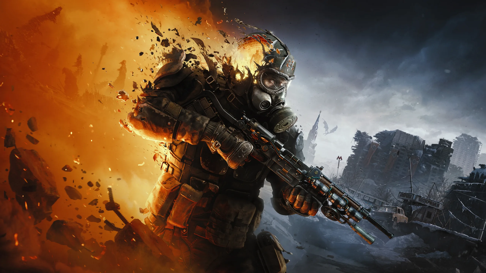
Защити Метро… от вас самих
4 февраля 2027 на PS5, Xbox Series X|S и PC
Одиночный шутер от первого лица о выживании и страхе. Прошло четверть века после ядерной войны. Москва, тоннели метро и отравленная поверхность над ними.
Серия возвращается к тесным тоннелям и клаустрофобии первых частей, но сохраняет большие открытые зоны Exodus. Сами разработчики называют 2039 самой мрачной и самой взрослой игрой серии. За две недели после первого показа игру добавили в список желаемого миллион человек.
| Разработчик | 4A Games, Киев и Слима (Мальта) |
|---|---|
| Издатель | Deep Silver / PLAION |
| Выход | 4 февраля 2027 |
| Платформы | PS5 и PS5 Pro, Xbox Series X|S, PC (Steam, Epic, Microsoft Store) |
| Движок | 4A Engine, перестроенный с нуля |
| Режим | Только одиночная кампания |
| Рейтинг | PEGI 18, ESRB Mature 17+ |
| Герой | Чужак, первый полностью озвученный протагонист серии |
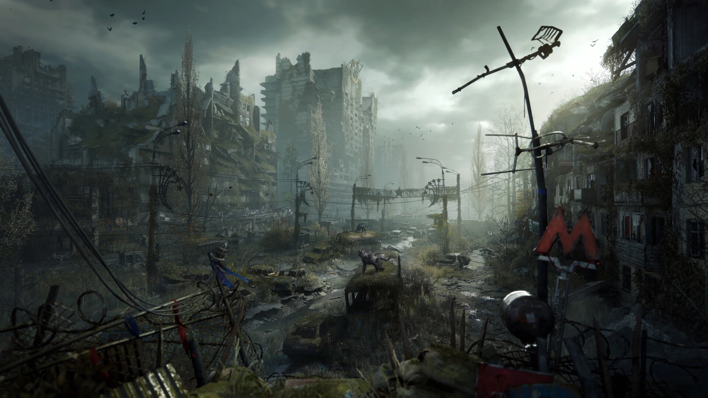
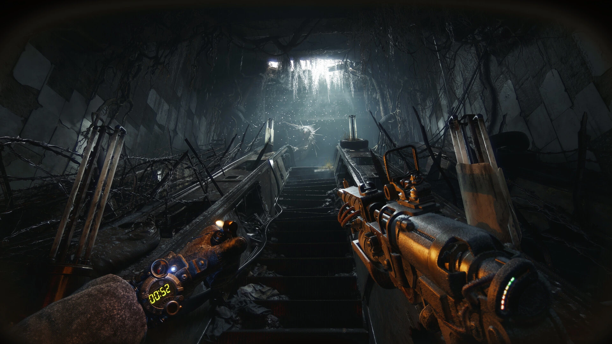
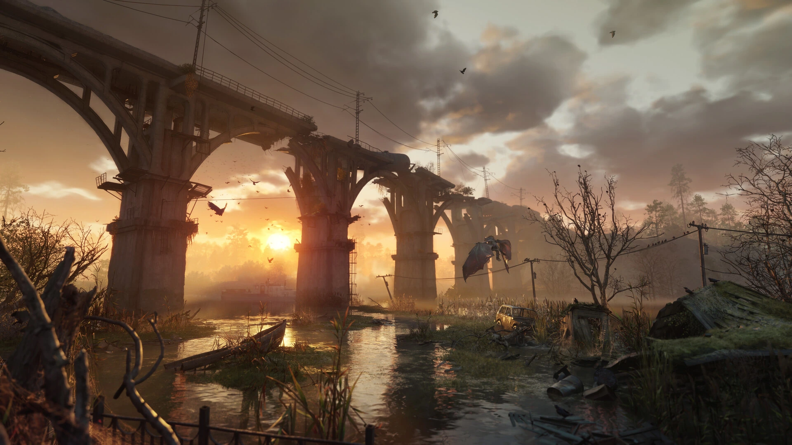
Плодородный край на востоке, почти не тронутый радиацией. Казалось, жизнь под землёй закончилась.
Атомная зима медленно сходит. Поверхность оттаивает, но остаётся смертельно радиоактивной.
Четверть века выжившие воевали друг с другом в тоннелях под отравленной Москвой. В конце концов их объединил один человек, фанатичный спартанец Хантер.
Он основал Новорейх. Это государство подмяло под себя почти все станции и истощённые войной фракции: Четвёртый Рейх, Красную линию, Ганзу. Мира не случилось. Режим держится на пропаганде и страхе и готовит людей к новой войне за поверхность против «тёмного и ужасающего врага».
«В METRO 2039 это сердце сгнило, стало апатичным и мрачнее, чем когда-либо».
Цена молчания. Ужасы тирании. Цена свободы. Война как культ.
Полный сюжет пока держат в секрете. Из официального описания, трейлеров и превью складываются четыре кадра.
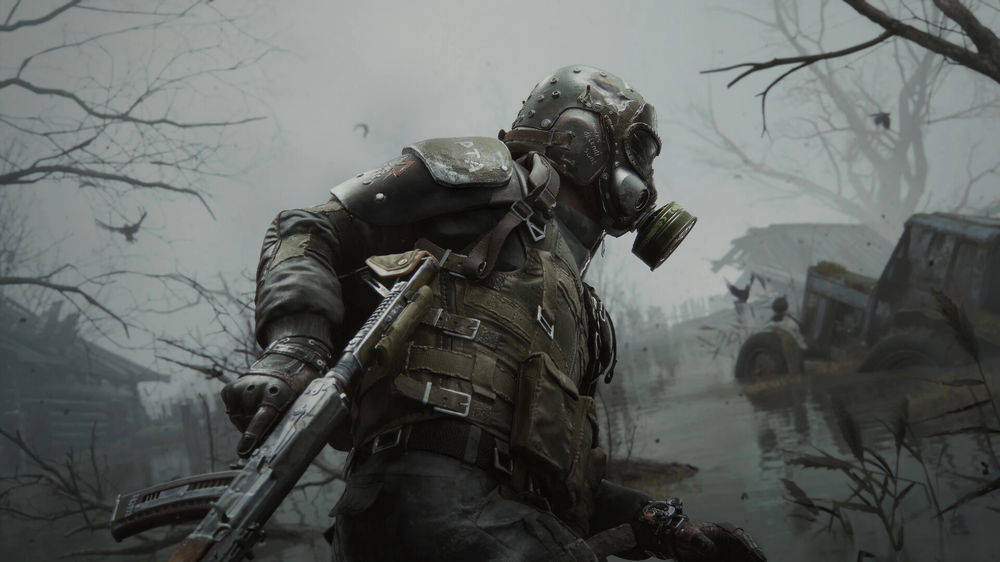
Далеко за Москвой живёт отшельник по прозвищу Чужак. Когда-то он был спартанцем, но его изгнали из метро против его воли. Его мучают кошмары наяву и призраки прошлого. Он возвращается туда, куда поклялся больше не спускаться, чтобы найти и убить Хантера.
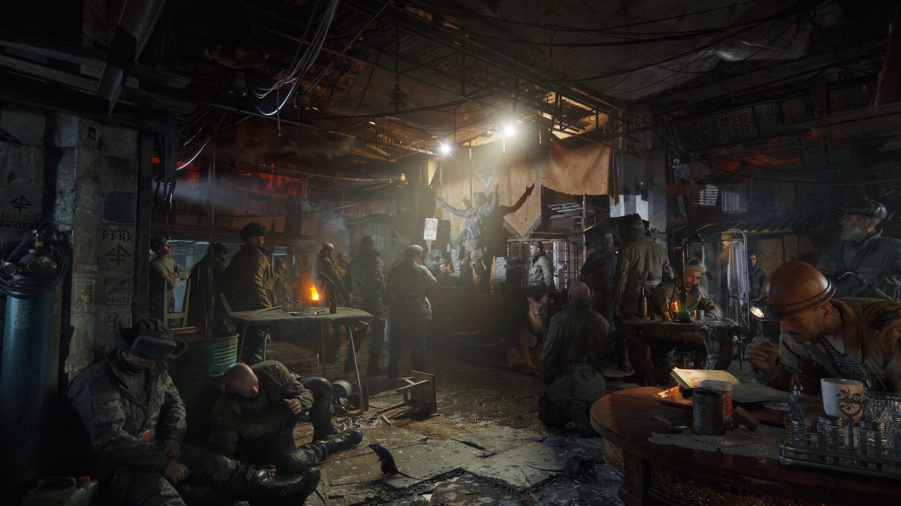
Независимый форпост на грани оккупации. Изнутри его подтачивают агитаторы и шпионы, снаружи давят рейдеры, которых натравливает Новорейх. Чужак договаривается с начальником станции Истоминым: он разберётся с рейдерами, а взамен получит информацию.
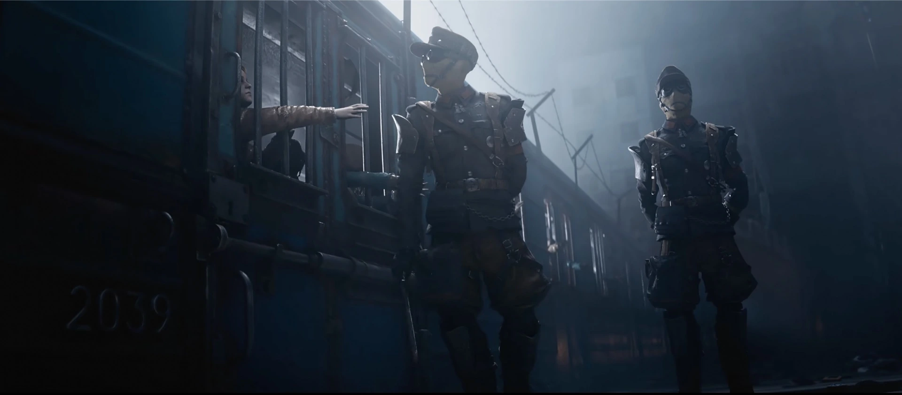
Поезд Новорейха везёт похищенных детей на перевоспитание. В классе хором повторяют «Враг должен быть уничтожен», на перроне остаётся груда детской обуви.
«Это игра без героев, потому что действие происходит в мире без героев», говорит креативный директор Андрей Шевченко.
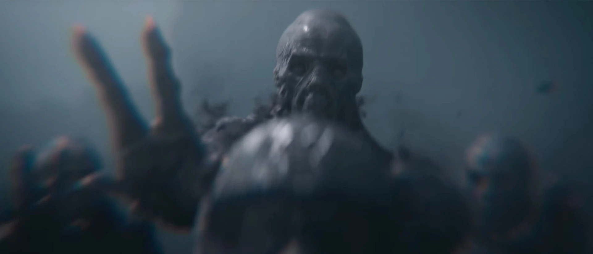
В финале трейлера появляются Тёмные в новом облике, ближе к телесному хоррору. В Metro 2033 Артём почти уничтожил их ракетным ударом, в Last Light выяснилось, что выводок уцелел. Теперь они пробираются в голову Чужака: в его кошмаре он под их контролем стреляет в детей.
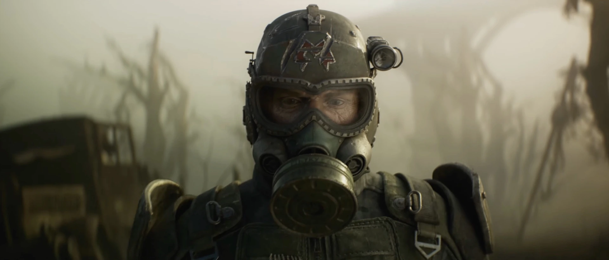
The Stranger, главный герой
«Спартанцы были волками. Но Чужак нечто хуже. Он гораздо хуже».
Бывший спартанский воин с тёмным прошлым, «жестокий настолько, насколько адаптивный». Носит броню и шлем с буквой «М» Ордена спартанцев.
Он первый полностью озвученный герой основной серии: Артём всегда молчал. И он не герой. Жители Севастопольской ему безразличны, он вернулся только за информацией. Настоящий мотив пока скрыт; фанаты гадают, не ищет ли он похищенного ребёнка.
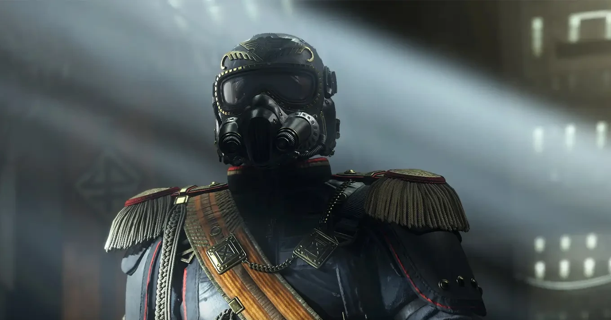
Фюрер Новорейха, главный антагонист
«Первый и величайший спартанец», один из основателей Ордена. В начале Metro 2033 он отправил Артёма в Полис и пропал в тоннелях. Все считали его погибшим.
В романе «Метро 2034» он выжил, но был искалечен и телом, и душой, ушёл из Ордена и прятался на Севастопольской под защитным шлемом. К 2039 году он возглавил Новорейх и правит метро железной рукой. Его форма превращает спартанскую броню в парадный мундир, а его лицо смотрит с каждого плаката.
«Мы защитники Метро. Если оно враждебно, убей его». Хантер, Metro 2033
Кадр из трейлера «Hunter», Xbox Games Showcase 2026. До перезапуска в 2022 году Хантер должен был стать главным героем игры.
Новорейх объединил почти всё метро под одним знаменем. Он вырос из Четвёртого Рейха прошлых игр, и впервые в серии станции подчиняются одной власти.
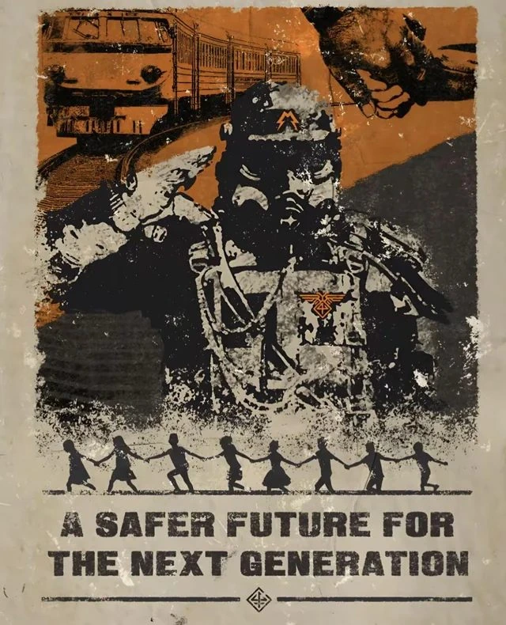
Плакаты, мерцающие экраны и громкоговорители повторяют одну и ту же мантру.
Поезда-конвои и классы, где хором звучит: «Новорейх — наш дом. Либо мы уничтожаем, либо нас. Милосердие — слабость».
Фюрер, его командиры и солдаты с автоматами Калаша. Рейдеры воюют за режим против независимых станций.
Твердыня режима спрятана внутри огромной дамбы. Цель военной машины — захватить поверхность.
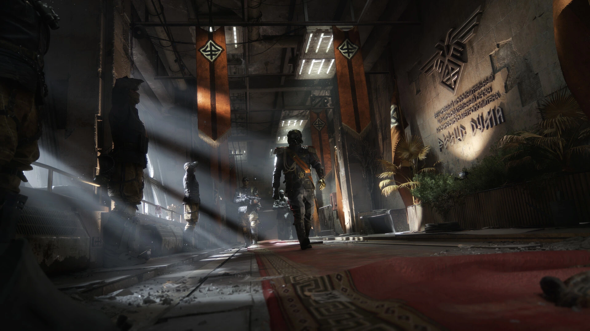
Москва и её метро с выходами на поверхность. Чем дальше от станции, тем опаснее.
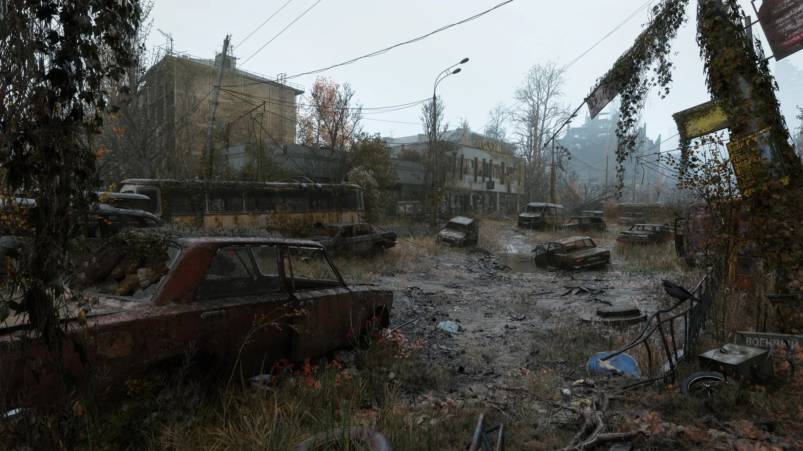
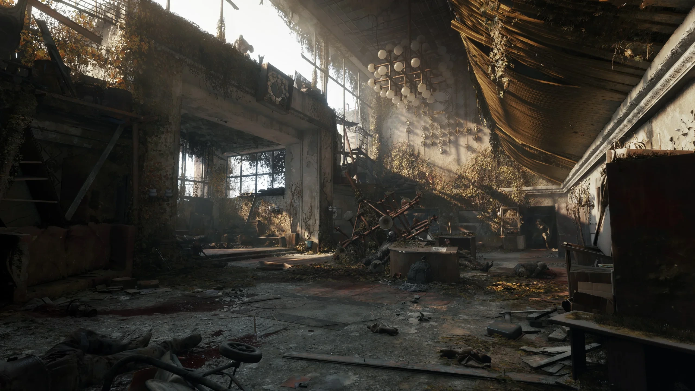
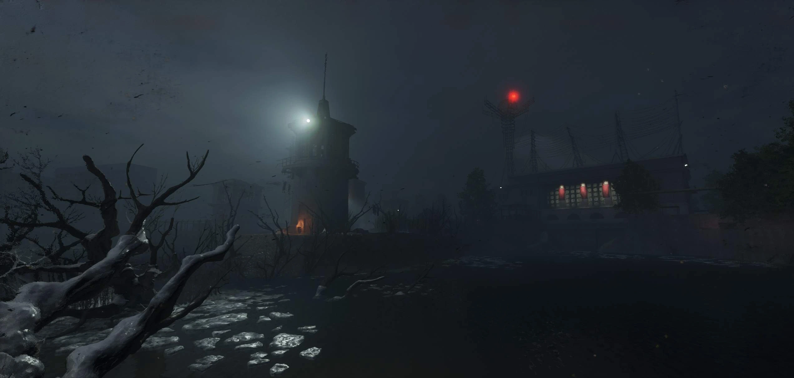
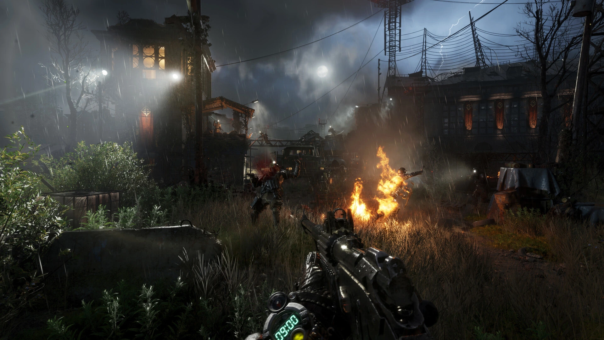
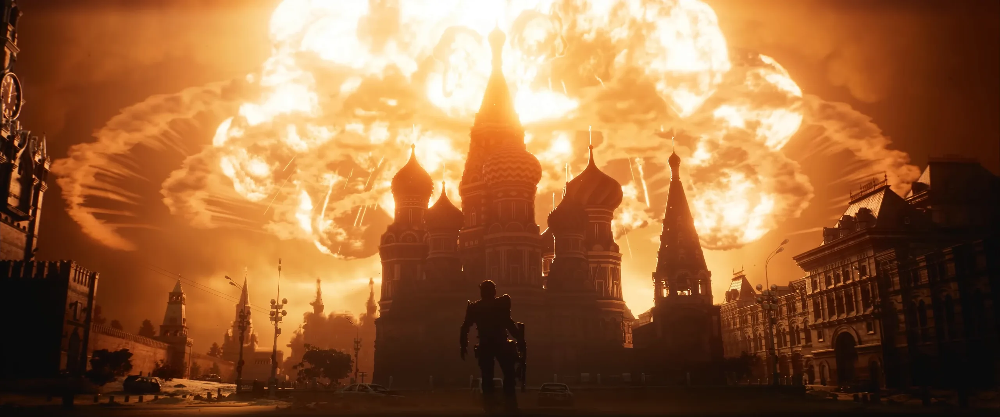
Севастопольская — стартовый хаб с десятками жителей, торговцами и долгими разговорами о пайках и слухах. В реальности это станция мелкого заложения, 8 метров, белый мрамор и 24 мозаичных панно о Крыме. Жизнь кипит в коллекторах под платформой, там устроены фермы. Каховская входит в её оборонительный периметр, Варшавская тоже упоминается.
Мутанты охотятся семейными стаями: разные виды нападают вместе, и оружие с тактикой приходится менять на ходу.
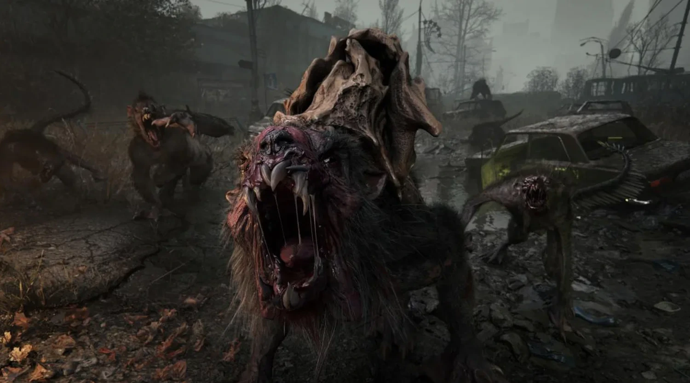
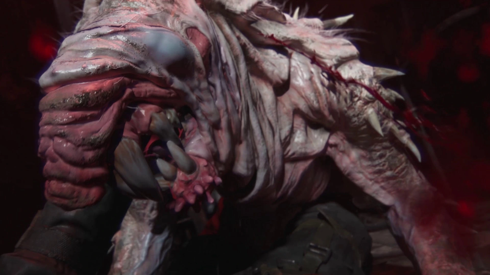
Ещё в списке Демоны, которые кружат над Красной площадью, Упыри, гигантские комары, доисторические ракообразные из коллекторов и новые летающие инсектоиды.
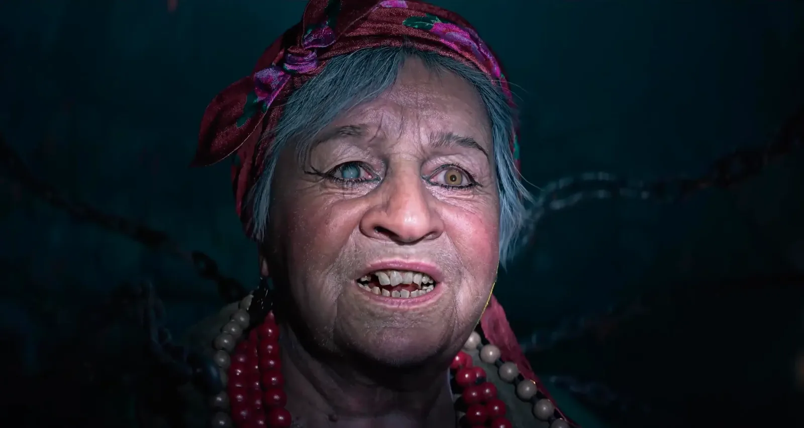
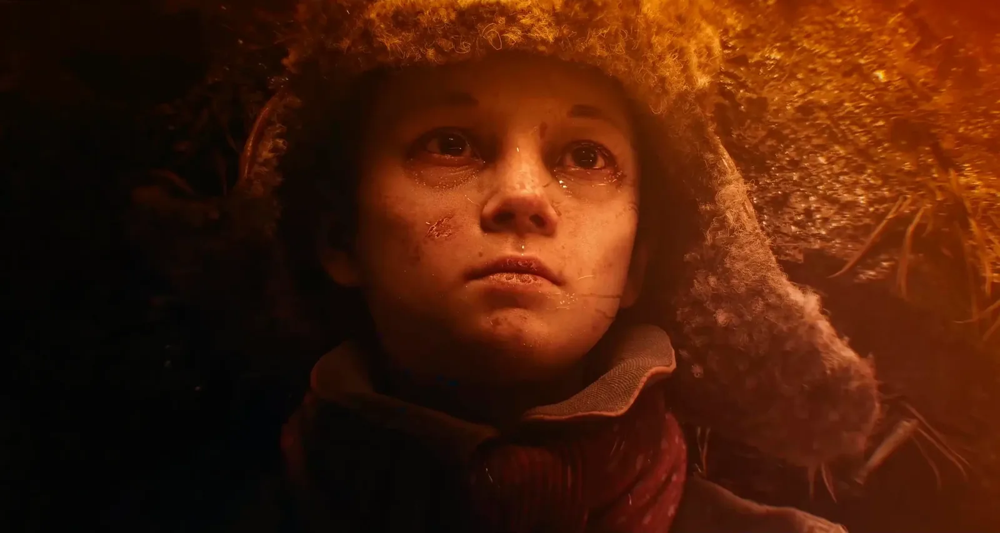
«Когда душа покидает тело, ей некуда идти, и она остаётся здесь, в Метро».
Хан, Metro 2033
Ведите курсором, это ваша зажигалкаЛистайте, пламя найдёт дорогу
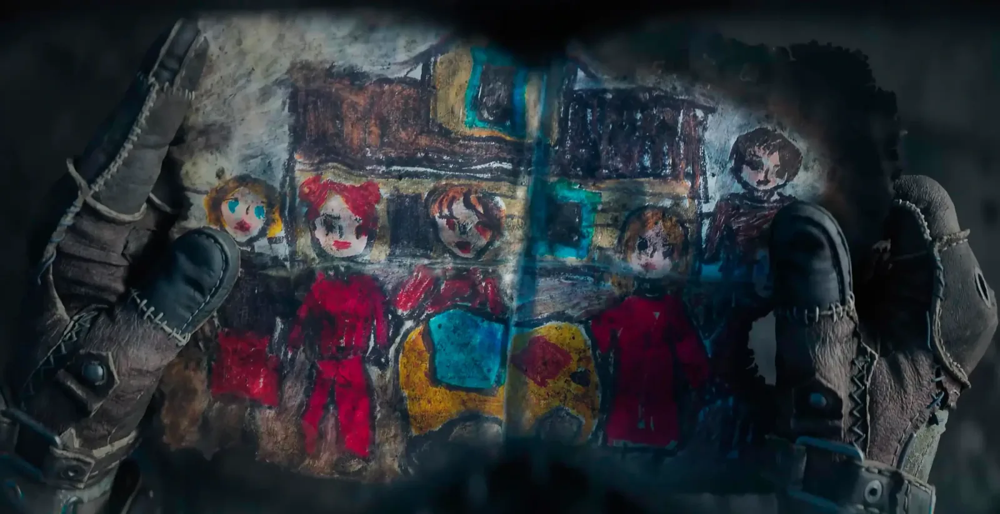
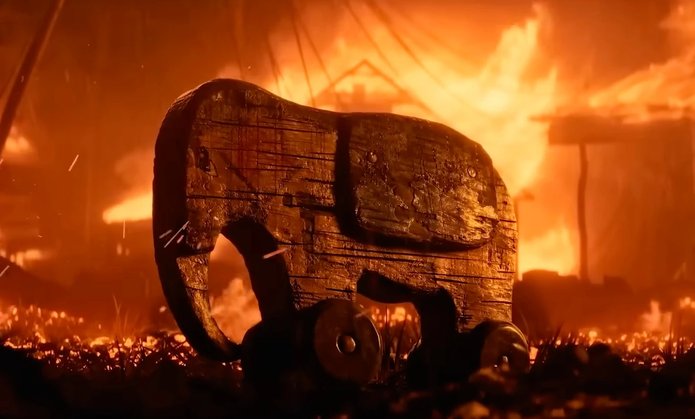
Тесные тоннели чередуются с широкими зонами на поверхности. В них полно необязательных мест: заброшенные дома, гаражи, подземные переходы, аптека, отель, снайперские позиции и тайные ходы. Это не открытый мир с вышками и значками. 4A взяли из Exodus идею исследования и пошли дальше.
Станции соединены тоннелями, убежище можно обустраивать: самогонный аппарат даёт бутылку в день. Игра сохраняется, когда подписываешь документы на станции.
У многих мест по три-четыре входа. Можно идти напролом с гранатами и коктейлями Молотова, а можно тихо: ножом, метательными ножами, выглядывая из-за угла и в ночном видении. Укрытия разрушаются, смерть приходит быстро.
«Спартанец знает, когда молчать, и выбирает, когда шуметь». Трейлер Renegade
На запястье компас, дозиметр и таймер фильтра; в трейлере часы показывают 20:39. Ультрафиолетовый фонарь проявляет метки и тайники, на него реагируют некоторые мутанты. Паяльная лампа вскрывает заваренные двери, зажигалка выжигает паутину, а её пламя под землёй работает как компас. Взрывчатка с пружинным таймером пробивает короткий путь сквозь стену. Замки взламывают, коды подбирают.
Радиация решает всё: доза спадает, только когда уходишь из зоны. Фильтры противогаза кончаются быстро, их приходится мастерить. Под землёй попадаются места с чистым воздухом, где маску можно снять.
Планшет с картой не ставит игру на паузу, и читать его под огнём или в радиации опасно.
Мелкий крафт делается на ходу из рюкзака, но серьёзная прокачка оружия и костюма возможна только на верстаке. Оружие надо чистить, иначе оно даёт осечки. От кармы и решений сохранить жизнь зависит, как к тебе относятся люди.
Шатун — новая тихая пневматическая винтовка, стреляет свёрлами, которые можно подобрать, и убивает с одного точного попадания. Шамблер — револьверный дробовик, с ним Чужак идёт по болоту в первом трейлере. Вернулась двустволка Дуплет, есть Калаш, оружие на батареях, метательные ножи и коктейли Молотова.
Три основных слота плюс четвёртый для фирменного оружия. Апгрейды открываются чертежами, армейские патроны снова служат валютой.
4A одними из первых выпустили игру с трассировкой лучей и 60 кадрами в секунду на новых консолях — Metro Exodus Enhanced Edition. В 2039 технологию развили дальше, а звуковой движок написали заново.
Digital Foundry отмечает трассированное глобальное освещение, RT-отражения и почти безумную детализацию, похожую на Nanite из Unreal Engine 5. На PS5 и PS5 Pro есть режим 60 кадров с трассировкой. Игра весит 135 ГБ. Системные требования, которые появились в Steam с RTX 4090 и 64 ГБ памяти, студия назвала ошибкой.
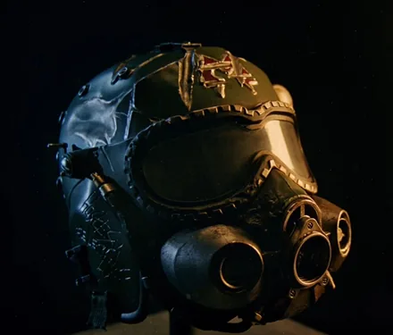
Коллекционное издание собрано вокруг носимой реплики спартанского шлема, сделанной по игровой модели.
В коробке ещё SteelBook, артбук в твёрдой обложке, сюжетное дополнение, цифровой артбук и саундтрек. Тираж ограничен.
$299.99 Collector's Edition
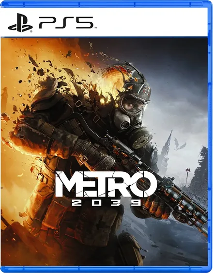
Только игра, на диске или в цифре. На PC в коробке лежит код.
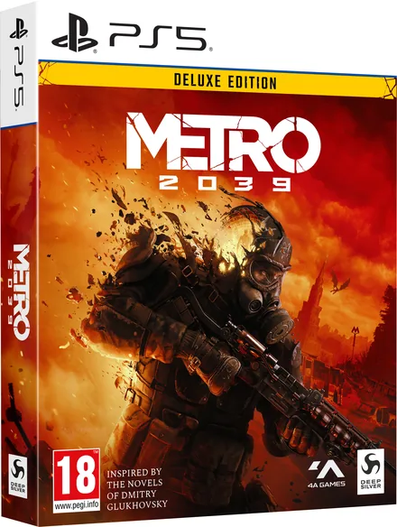
Игра, сюжетное дополнение, цифровой артбук и саундтрек. В физической версии добавляются SteelBook и твёрдый артбук. За предзаказ дают облик «Фюрер Хантер».
Specialist Pack: три чертежа для рюкзака. Equipment ускоряет крафт, Chemtech даёт больше фильтров для радиоактивных зон, Munitions приносит редкие патроны. Надеть можно только один. Предзаказ открыт с 13 октября 2026.
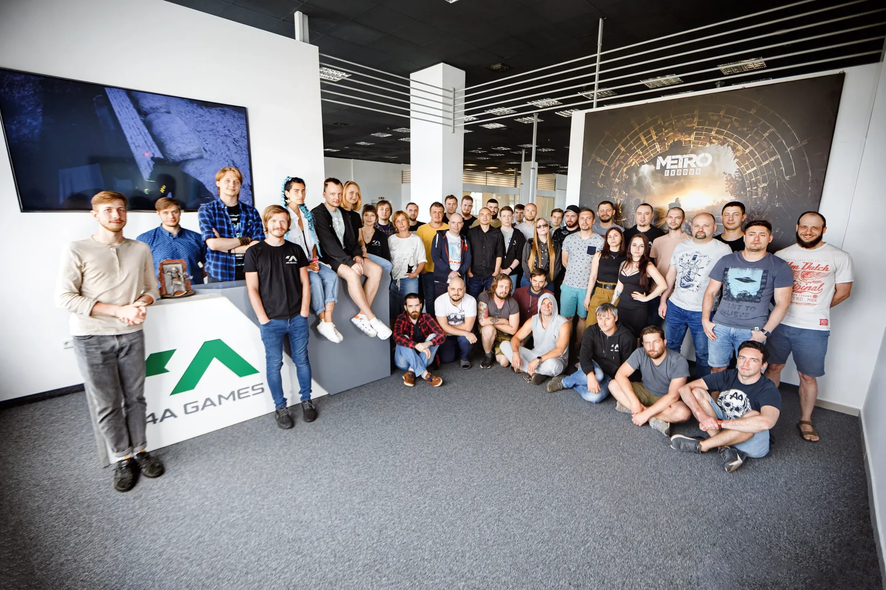
4A Games основали в Киеве в 2005 году выходцы из GSC Game World, которые работали над движком S.T.A.L.K.E.R. Сегодня в студии больше 200 человек. Над 2039 работали семь лет, дольше, чем планировали. В 2022 году проект перезапустили и написали сюжет заново.
Линия 2039
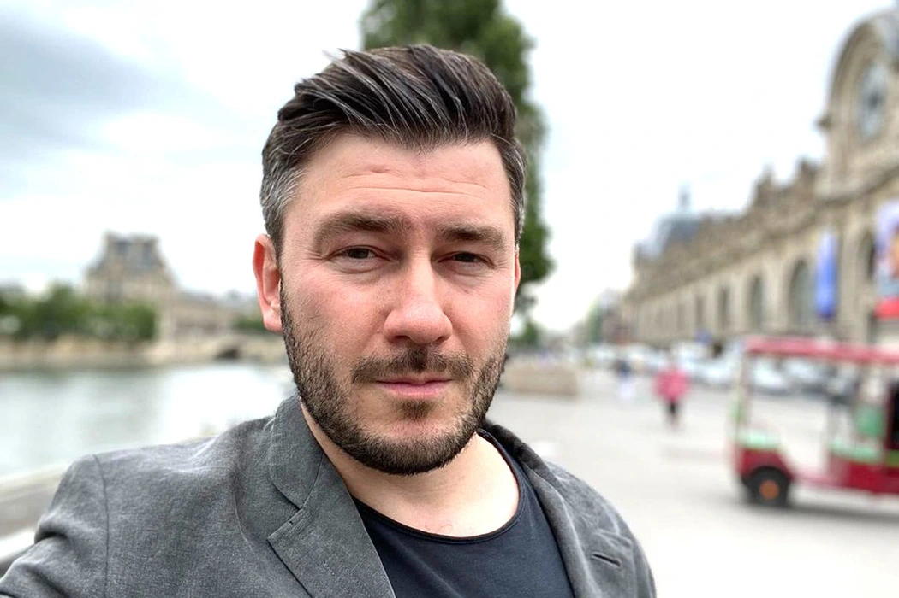
Автор вселенной «Метро» и соавтор сценария. Придумал «Метро 2033» ещё в школе и выложил первую версию романа бесплатно в интернете. Про 2039 говорит, что она «будет мрачнее всего, что вы видели раньше».
Креативный директор — Андрей Шевченко, со-креативный директор — Павел Ульмер, исполнительный продюсер — Джон Блох, музыка — Алексей Омельчук, который пишет для серии с Metro 2033.
20:39. Столько показывают часы Чужака в трейлере, а у поезда с детьми номер вагона 2039.
Рисунки. Среди детских рисунков в трейлере спрятаны логотипы 4A Games и Deep Silver.
Сохранение. Чтобы сохраниться, нужно расписаться в документах на станции.
Огонь. Пламя зажигалки под землёй тянется по сквозняку и показывает дорогу.
Самогон. Аппарат в убежище приносит одну бутылку в день.
Название. Первая номерная часть без подзаголовка, а рабочее название проекта было «M4».
Чистый воздух. Под землёй есть закрытые помещения, где противогаз можно снять.
Утечка. Это первая игра серии, промежуточная версия которой ушла в сеть до релиза.
На PS5, Xbox Series X|S и PC. В части Азии и Океании игра выйдет 5 февраля.